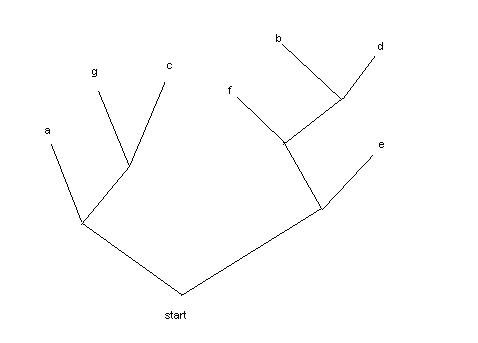

In earlier days, computers were small and conserving space in memory or on a disk drive was always a premium. The computer I am using now has over 1 million times the memory of my first PC that I bought in 1983, and the new 80 gigabyte disk holds 4000 times the amount of data. The first computer also cost a lot more.
Ironically, space is still at a premium primarily because as the machines have gotten bigger and faster, so have the problems we want to solve.
In this study we'll look at an early algorithm developed by David Huffman in 1952 when he was a graduate student at MIT. The algorithm squeezes the "fluff" out of data but in a way that the original can be reproduced exactly. You see this done in programs like Winzip, stuffit, or for Unix folk, gzip. This is called "lossless" compression and is different from "lossy" compression used in audio and video files where the exact original cannot be reproduced.
For demonstration purposes we'll stick with character data and mostly just use a small subset of the alphabet. As usual, we'll use small amounts of Python code to make it all work.
Computers store text in several ways. The most common encoding is Ascii where each character is stored in an 8 bit byte. So, for example, the character 'e' is the bit sequence '001100101'. As any byte can take one of 256 distinct values (0 to 255) there is plenty of room for the Latin alphabet, the numbers zero to nine and lots of punctuation characters such as periods, commas, newline indicators and so on. Actually, if we stick to English text, we can get by the first 127 values. Other European languages require some more letters and use the upper range 128-255 as well. Still other languages, like Russian or Chinese, require more elaborate coding systems such as Unicode where multiple bytes are used per character.
The secret of compressing data lies in the fact that not all characters are equally common. For instance, in typical English text the letter 'e' is much more common than the letter 'z'. In fact there are roughly 70 'e's for every 'z'. If we could encode the letter 'e' with less than the usual 8 bits and in exchange let the letter 'z' be take more, we'd be money ahead.
This sort of thing is pretty common. Human languages have mostly evolved so that the most common words such as "I", "am", "Yo", "soy", "ich" and "bin" are nearly as short as possible. Uncommon words like "ominous", "peligroso", or "Einkommensteurerklärung" come rarely enough to not make too much difference.
Huffman Data Compression.
We will look at several functions that bring together an example of Huffman data compression for text files. These functions do the following.
1. Examine text to be compressed to determine the relative frequencies of individual letters.
2. Assign a binary code to each letter using shorter codes for the more frequent letters. This is the heart of the Huffman algorithm.
3. Encode normal text into its compressed form. We'll see this just as a string of '0's and '1's. This will turn out to be quite easy.
4. Recover the original text from the compressed. This will demonstrate a nice use of recursive traversal of a binary tree, but will still remain fairly simple.
To view the complete computer program's source code Click Here.
Determining Relative Frequencies.
Our function "frequency" takes a text string as input and returns a dictionary of the letters encountered with a count of how often they appear.
def frequency (str) : freqs = {} for ch in str : freqs[ch] = freqs.get(ch,0) + 1 return freqs
Here is an example run. To keep things simple we are using text consisting of only 7 characters (a-g), but we will vary their frequency.
% python >>>
import huffman
>>> freqs = huffman.frequency("aaabccdeeeeeffg")
>>> print freqs
{'a': 3, 'c': 2, 'b': 1, 'e': 5, 'd': 1, 'g': 1, 'f': 2}
>>>
The dictionary returned lets us look up the frequency for each letter. Notice the use of the .get function. If the letter is not already in the dictionary, the default value zero is returned, otherwise its existing count. In either case the count is incremented and the key/value pair is updated or newly added to the dictionary.
Assigning codes to the Characters
Our next function builds and sorts a list of tuples. This list will be the input for the main Huffman algorithm.
def sortFreq (freqs) : letters = freqs.keys() tuples = [] for let in letters : tuples.append((freqs[let],let)) tuples.sort() return tuples
The dictionary "freqs" that we built above is the input to the function "sortFreq"
>>> tuples = huffman.sortFreq(freqs) >>> print tuples [(1, 'b'), (1, 'd'), (1, 'g'), (2, 'c'), (2, 'f'), (3, 'a'), (5, 'e')] >>>
The sort method for a list compares individual elements. In this case the elements are tuples of two values, a number and a character. The sort method will first compare the numbers and only if they are equal will it compare the character values. Notice that sorting the list has the effect of moving the least common letters to the front of the list. This will be very convenient.
Let's jump ahead just a bit. Here are the codes that will be assigned to each of the seven characters.
a '00'
b '1010'
c '011'
d '1011'
e '11'
f '100'
g '010'
Each character is assigned to a string of 0's and 1's. We're cheating a bit. It's easier to use strings in our program than the actual bits we would use in real life. But see the exercises at the end.
Notice that the two most common characters, "a" and "e" are represented by just two bits, whereas the two least common characters "b" and "d" each use four bits.
Perhaps not so easy to see is that there is no ambiguity in this encoding. Any string of zero's and one's will map to a unique string of the characters 'a' to 'g'. This is much more intuitive if we draw a tree for the code table.

If we start at the bottom and traverse up the tree through the branches we can arrive at any character in a series of left and right turns. If we add a "zero" for each left turn and a "one" for each right turn, the coding for the character at the end is produced. For example, a left-right-left takes us to the letter "g" which has "010" for its code.
Since a unique path leads to each letter we don't need anything to delimit one character from another. We will be able to just run their bits together.
So now let's back up and see how this tree is built from the frequency distribution. It is both clever and actually not too hard.
Remember we had the following list of tuples. The tuples are in order of the frequency of the letter each represents. We will turn this list into a tree.
>>> print tuples [(1, 'b'), (1, 'd'), (1, 'g'), (2, 'c'), (2, 'f'), (3, 'a'), (5, 'e')]
Unlike real trees, our tree will grow from the top to the bottom, from the leafs back to the root. (Whimsical fantasy should be in every programmers toolbox). We'll pull two elements from the front of the list and combine them into a new element. Remember these 2 elements will have the least frequencies. The new element will be the branch point to the 2 elements. The frequency of the new branch point is simply the sum of the frequencies of its two parts. Think about this for a just a moment and it should make sense. The first time we do this the new element will look like
(2, ((1, 'b'), (1, 'd')))
which is the branch point in the upper right of the tree leading to the characters 'b' and 'd'. Since both 'b' and 'd' have a frequency of 1, their branch point has a frequency of 2. Next we add this new element onto the list and resort it putting the new element (branch point) into its proper position in the list. The process is repeated. Each time two elements are replaced by one until the list has a single element which represents the complete tree.
Here is the Python function that does this. It's even less wordy than the above explanation.
def buildTree(tuples) : while len(tuples) > 1 : leastTwo = tuple(tuples[0:2]) # get the 2 to combine theRest = tuples[2:] # all the others combFreq = leastTwo[0][0] + leastTwo[1][0] # the branch points freq tuples = theRest + [(combFreq,leastTwo)] # add branch point to the end tuples.sort() # sort it into place return tuples[0] # Return the single tree inside the list
Once we have the tree, we can trim of the frequencies leaving us with a nice nested representation.
def trimTree (tree) : # Trim the freq counters off, leaving just the letters p = tree[1] # ignore freq count in [0] if type(p) == type("") : return p # if just a leaf, return it else : return (trimTree(p[0]), trimTree(p[1])) # trim left then right and recombine
>>> tree = huffman.buildTree(tuples)
>>> trim = huffman.trimTree(tree)
>>> print trim
(('a', ('g', 'c')), (('f', ('b', 'd')), 'e'))
So "trim" has the tree above as coded into a set of nested tuples.
Codes may be assigned by recursively traversing the tree, keeping track of the left and right turns in the variable "pat". When we reach a leaf of the tree, i.e. a string rather than a nested tuple, we can assign the code calculated enroute. We have a global dictionary "codes" which will be filled in along the way.
def assignCodes (node, pat='') : global codes if type(node) == type("") : codes[node] = pat # A leaf. set its code else : # assignCodes(node[0], pat+"0") # Branch point. Do the left branch assignCodes(node[1], pat+"1") # then do the right branch.
Here we will run the function assignCodes on the trimmed tree to build our lookup dictionary for encoding.
>>> print trim
(('a', ('g', 'c')), (('f', ('b', 'd')), 'e'))
>>> huffman.assignCodes(trim)
>>> print huffman.codes
{'a': '00', 'c': '011', 'b': '1010', 'e': '11', 'd': '1011', 'g': '010', 'f': '100'}
Encoding and Decoding a Text Stream.
Once we have our codes dictionary populated encoding a text string is simple. We have only to look up the bit string for each character and paste it on.
def encode (str) : global codes output = "" for ch in str : output += codes[ch] return output
This turns on our original string "aaabccdeeeeeffg" into 44 bits that we represent with "00000010010100101010111111111101101110111000". The original text at one byte per character requires 120 bits.
Decoding the bit stream back into text is a little harder but still not bad. Each "zero" in the bit stream means a left turn up the tree, each "one" a right turn. When a leaf is reached, its character is sent to the output and we restart at the base of the tree for the next character.
def decode (tree, str) : output = "" p = tree for bit in str : if bit == '0' : p = p[0] # Head up the left branch else : p = p[1] # or up the right branch if type(p) == type("") : output += p # found a character. Add to output p = tree # and restart for next character return output
A Real Example.
Feeding this document through our program resulted in the following set of codes. I have omitted most of the middle. You can see that the space character is by far the most common followed by 'e' and 't'.
[(1, '%'), (1, '/'), (1, 'Y'), (2, '7'), (2, '8') ... (608, 't'), (803, 'e'), (1292, ' ')]
As you can see the algorithm compressed 22135 bytes to 13568 and then successfully restored the original. The function "main" reads text from standard input and puts it through the paces. Your results may vary as the file is undergoing change.
% python ./huffman.py < huffman.html Original text length 22135 Requires 108543 bits. (13568 bytes) Restored matches original True Code for space is 100 Code for letter e 1110 Code for letter y 101010 Code for letter z 1111101100
Ideas for Further Exploration
In order to compress a text file and then later restore it, the tree must be included along with the bit stream. Modify the code to produce compressed files along with their decoding tree.
Suppose we made a reverse dictionary from "codes" where the keys are the compressed bits and the values are the original Ascii characters. Could you use this instead of the tree to decode compressed text? Modify the function "decode" to work this way. Compare the two functions for simplicity and speed.
Create binary ones and zeros so that real compression actually takes place. You will need to investigate the bit operators in Python.
Can the program as it stands compress binary data as well? Test it.
Try using text from other types of sources like reports and even other languages.
German and English keyboards have the "Y" and "Z" keys switched. Why? Run some German text through the program to check relative frequencies of "Y" and "Z" in the two languages. If you need to find some German text just google "Einkommensteurerklärung".